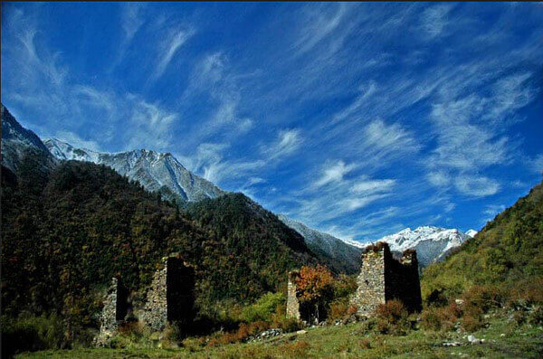
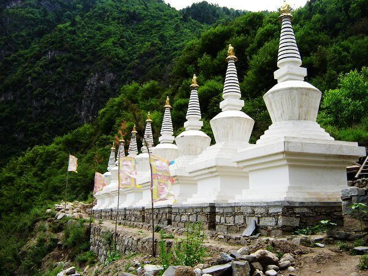
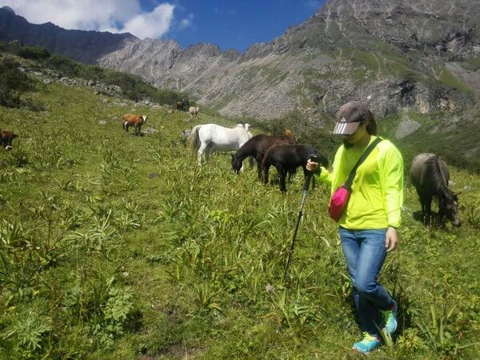
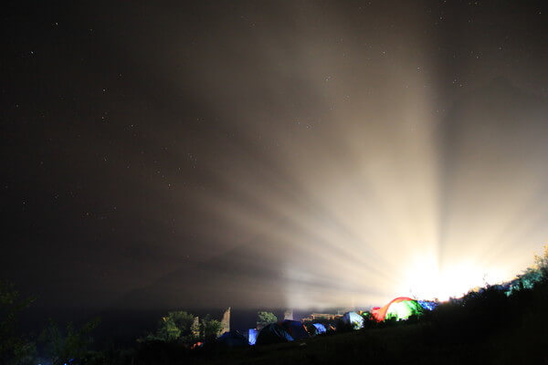

逃离北上广
逃离繁忙的工作
逃离糟糕的空气
找一个可以让你心情飞扬的地方
逃离北上广
逃离繁忙的工作
逃离糟糕的空气
找一个可以让你心情飞扬的地方
今天跟大家介绍的是素有“天然氧吧”之称的
孟屯河谷—玉匹沟
孟屯河谷风景区位于四川阿坝州理县西北部的上孟乡。景区幅园面积714.5平方公里，海拔高度位于至之间，年光照1672小时，年平均气温10摄氏度，干燥度1.38度。风景区除孟屯古堡外，主要风景点集中于上孟地区。孟屯河谷风尘卓绝，四季皆风景；空气清新，气候宜人；山光水影舞艺诡谲奇丽。纯洁灵圣；天地灵光。



而我们今天要介绍的2天的徒步露营线路，玉匹沟就在孟屯河谷风景区景点内，是孟屯河谷三大沟之一，平均海拔3500米。
1、桑登寺——百年寺宇

桑登寺会有一年一度的庙会，不仅是人民为了纪念雅弘竹巴大师修建桑登寺的功德而举行的拜佛活动，也是藏族同胞们一年中最隆重的祭神活动。寺庙里有一块神石，是青海、西藏、甘孜等地大寺庙里都没有的一块佛手印，相当于镇庙之宝。
寺庙的地理位置特殊，喀尔什古神山从阿坝州黑水县延绵几百公里，到日波寨就是终点，像一条长龙伏于群山之巅，桑登寺的位置即为龙头。
2、玉匹沟健行露营

春夏季节的玉匹沟，森林茂密，河水充沛。在一条弯弯曲曲的小道间，一座座矗立的碉楼里，充斥着新鲜的空气，覆盖着春天的气息。

晚上，露营之地的灯光映衬着山峦夜空。
1. 成都——孟屯河谷——上孟乡 ——玉匹沟
沿途经大禹故里汶川城-杂谷脑河谷-古羌族聚居地，最后到达孟屯河谷的上孟乡。沿着河谷出发，途径山村日波寨（可以俯视整个上孟乡），然后参观红教的桑登寺——原始森林，过四道桥，最终在玉匹沟内扎营休息。
2. 玉匹沟——上孟乡——成都
前往玉匹沟的玉比格罗，感受高原海子的神奇魅力。之后，返回营地收拾行囊，然后驱车返回成都，结束旅程。
1. 绿色出行
2. 装备建议：个人物品：帐篷、炉头、背包(男60L、女45L以上)、帐篷、地席、防潮垫、头灯(含备用电池)、冲锋衣裤、羽绒服、雪套、个人洗漱卫生用品、-5度睡袋、登山鞋(必备)、个人防雨具、个人餐具、水壶、登山杖、食品、个人FB物资、个人药品、换洗衣物、相机、防水袋（用于衣物、睡袋、手机、相机等物品的防水）。
3. 体力要求：徒步活动有多日在高海拔行程，建议量力而行。
4. 手机信号：联通、移动均有信号，但并非全程信号覆盖。
5. ATM机：可以在汶川县城内取现，建议使用中国农业银行储蓄卡和邮政储蓄卡。
6. 高反问题：绝大多数人初到高原都会有不同程度的“高原反应”，这是正常的情况，其症状会逐步减轻或消失。 如有不适，请及时联系领队。但有严重心、肺疾病高血压患者不宜到高原旅行。
1. 自驾车路线：成都—都江堰—汶川—薛城右转进入上孟乡日波寨薛孟公路终点站，右转上山腰
2. 背包族路线：成都茶店子车站—都江堰—汶川转乘至上孟班车可到上孟乡政府，下车后走到薛孟公路终点（土路和柏油路交界）右转上山腰。
3. 停车：驿站门口有停车位，一般小轿车、越野车可开车直达。
4. 周边景点：
A：距离桃坪羌寨40公里，离薛城筹边楼27公里，往返途中可顺道参观。
B：距离米亚罗风景区103公里，不论是穿越还是在孟屯河谷休整过后前去，都可以感受劳累之后的轻松，泡泡温泉，慵懒一游。
（小编：九九 | 图文改编来自网络）
微信扫一扫
预览素材内容